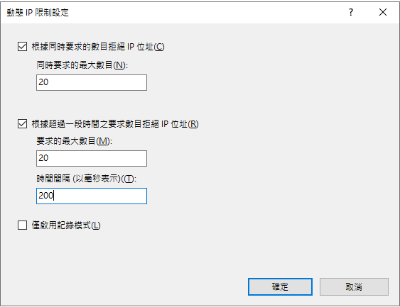
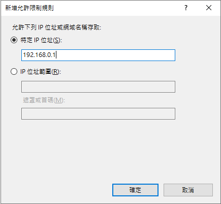

前言
某一天，系統突然開始出現詭異的現象：使用者回報網站時好時壞，重新整理一次可能好，但下一秒又壞了。查看記錄檔發現大量的 403 Forbidden 錯誤，但最讓人困惑的是，同一個檔案，有時候能載入，有時候卻被封鎖。這到底是怎麼回事？
1. 檔案/資料夾權限設定問題
先從最常見的原因開始排查：
- 確認網站資料夾的 NTFS 權限是否正確
- IIS_IUSRS 和 IUSR 使用者需要有讀取權限
- Application Pool 身份對網站目錄需要有讀取權限
2. IIS 設定檢查
- 在 IIS 管理員中確認網站的身份驗證設定
- 檢查是否啟用了正確的驗證方式（如匿名驗證）
- 確認網站綁定設定是否正確
以上全部確認過，都沒有問題，403 依然持續出現。
問題的關鍵：動態 IP 限制設定
以上都查過沒問題之後，只能在網站上重複重新整理，同時盯著 IIS 記錄檔看。記錄檔裡確實有很多 403，但看不出理由。接著注意到一件事：原本 403 的檔案忽然正常了，反而其他檔案變成 403。多重整幾次，每次被影響的檔案都不一樣。
到這裡方向就清楚了。這不是靜態的權限問題，而是動態封鎖——問題的源頭是 IIS 的「動態 IP 限制」功能。這個原本用來防止 DDoS 的機制，把正常的頁面載入請求當成攻擊流量給擋掉了。
讓我用一張圖來說明這個機制是如何運作的：
為什麼會發生這個問題？
現代網站通常需要載入大量的 JavaScript 檔案和其他資源。當使用者開啟網站時，瀏覽器會在短時間內對同一個伺服器發出多個請求來載入這些資源。如果動態 IP 限制的門檻設太低，這些正常的載入請求就可能被誤判成攻擊流量。
解決方案
1. 調整動態 IP 限制設定

這是我原先的設定，門檻太低導致一般使用者也被擋。修改為以下設定：
-
「同時要求的動態 IP 位址」：50
現代網站首次載入通常會在短時間內觸發多個資源請求，設 50 可以避免誤判正常的頁面載入行為。 -
「要求的最大數目」：100
一般使用者很少在短時間內產生大量請求，設 100 允許正常的頁面切換和操作。 -
「時間週期」：5 秒（5000 毫秒）
縮短計算週期，讓封鎖更快失效，也讓正常使用者不會被連帶卡太久。DDoS 通常會在短時間內持續發送大量請求，這個設定仍然能偵測到。
2. 設定 IP 白名單
-
開啟 IIS 管理器
-
在左側選擇您的網站
-
找到「IP 位址和網域限制」功能並雙擊
-
在右側「動作」面板點選「新增允許項目」
-
輸入要允許的 IP 或 IP 範圍：
-
單一 IP：直接輸入 IP（如：192.168.0.1）
-
IP 範圍：輸入網段和遮罩（如：192.168.0.0，遮罩：255.255.255.0）

3. 依請求類型調整安全規則
如果站內有明確的路徑區分（例如 /api/、/static/），可以在 IIS 的「IP 位址和網域限制」針對不同路徑設定不同的動態 IP 限制閾值，不需要對整個站套同一個規則：
- 靜態資源路徑（圖片、CSS、JS）：限制可以放寬，這類請求量大但行為規律
- API 端點：維持中等門檻
- 敏感操作路徑（登入、上傳等）：維持較嚴格的限制
補充建議
如果調整完動態 IP 限制後，403 頻率明顯下降，可以再考慮從資源面下手減少並發請求數量，讓門檻不需要設太鬆：
- 合併 JavaScript 檔案：減少首次載入的請求數
- 啟用瀏覽器快取：回訪使用者不會重新觸發所有資源請求
- 使用 CDN：把靜態資源分流到 CDN 節點，不走 IIS 主站
另外建議定期查一下 IIS 記錄檔，特別是 403 的來源 IP，確認封鎖的是正常使用者還是真的攻擊流量，視情況再調整門檻。
結論
這次的問題排查過程說明一件事：403 不一定是權限設錯，也可能是安全機制誤殺了正常流量。動態 IP 限制的預設值是為了防 DDoS 設計的，套在一般公開網站上門檻往往太低。調整成符合實際流量的數值，並搭配 IP 白名單處理內部或信任 IP，通常就能解決這類間歇性 403。